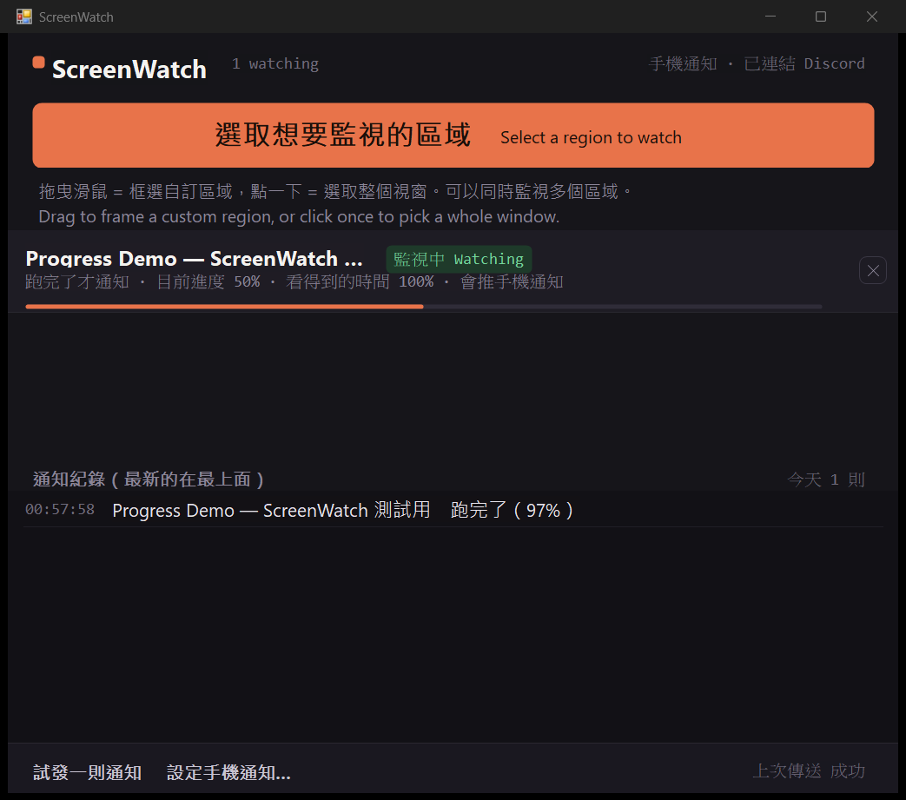
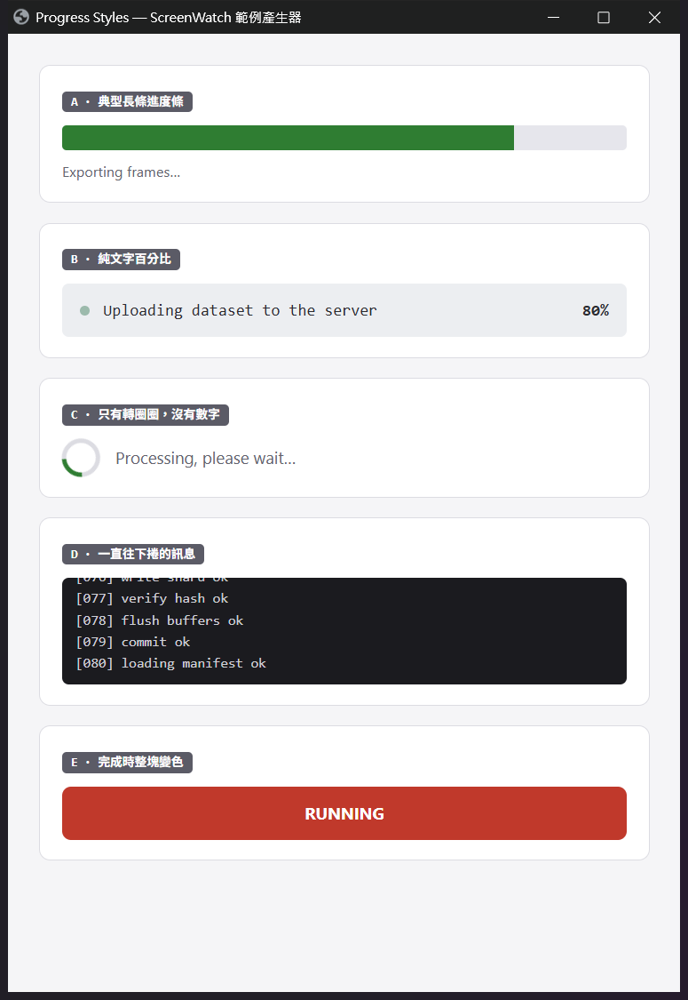

It doesn't matter which application owns that pixel — Citrix, SAP, an internal tool written in 2005, a browser dashboard, a render queue. ScreenWatch only looks at pixels, so it never needs to integrate with anything.
Download free Windows 10 / 11 · ~110 KB · no admin rights needed
On any change · when a progress bar fills · at a chosen percentage · when a colour changes · when the region goes quiet. The last four are edge-triggered, so a finished job pings you once, not every second.
Frame the whole window if you like — ScreenWatch locates the bar inside your selection. It still works when the bar hits 100% and instantly resets for the next run.
A line of text like "Uploading… 22%", a spinner, a scrolling log — none of these have a shape to measure. Use "tell me when it goes quiet" instead: it watches for the region to stop moving.
Point it at a Discord webhook and go get lunch while the machine works. Your phone buzzes when it's done.
A minimised window draws nothing, so ScreenWatch parks it off-screen and keeps watching — rather than telling you not to minimise things.
If it can't read the region it says so and why, and that time is subtracted from the coverage figure. The notification log tells you whether a condition never fired or Windows swallowed the toast.
"Progress" looks completely different from one program to the next. These five shapes cover most of it, and they don't all suit the same condition. Picking the right one is the difference between a ping and an hour of silence.

| A · A classic bar | Tell me when it finishes There's a clear filled/unfilled boundary, so the percentage is measurable. You can frame the whole window; the bar gets located automatically. |
| B · Text with a percentage "Uploading… 22%" |
Tell me when it goes quiet There is no shape to measure here, so "when it finishes" is completely blind to it — measured: zero triggers in 22 seconds. "Goes quiet" handles it correctly. |
| C · A spinner, no numbers | Tell me when it goes quiet The moment the spinner stops is the moment the work finished. |
| D · A scrolling log | Tell me when it goes quiet Builds, deploys and backups all look like this. Set a longer quiet window (30s) so a mid-run pause isn't mistaken for completion. |
| E · A block that changes colour | Tell me when the colour changes Red to green, grey to blue. Frame just the block, not the text beside it. |
This build isn't code-signed yet (a certificate runs $100–300 a year; it's coming), so Microsoft Defender SmartScreen blocks it. What that warning means is "not enough people have downloaded this for me to recognise it" — not "this file is malicious". Every new program hits this before it has sold enough copies.
Running the installer looks like this:
If there's no "More info" link
The file was marked as downloaded from the internet and blocked outright.
Right-click ScreenWatch-Setup.exe → Properties, tick
Unblock at the bottom, click OK, and run it again.
You don't need to turn SmartScreen off
The steps above whitelist this one file and leave your protection intact. Some guides tell you to disable SmartScreen in Windows Security — please don't. That strips the check from every file you download afterwards, and most people never switch it back on.
If you'd rather verify first
Upload the installer to VirusTotal
and let seventy-odd engines look at it. You can also confirm you got the
exact file that was published — run
Get-FileHash .\ScreenWatch-Setup.exe -Algorithm SHA256
and compare it with the hash on the
release page.
| It moves your windows | When a watched window is minimised, ScreenWatch restores it and parks it outside the visible desktop so it keeps drawing and can still be captured. Put it back any time from the tray menu; quitting the app restores it too. |
| "Finished" is an inference | Windows progress bars animate as they fill, so a program that resets the instant it completes may never actually render a full bar. ScreenWatch then infers completion from progress falling sharply — which can mistake a failed retry for a finished job. |
| Not for anything critical | This is a convenience tool, not a monitoring or alerting system. Do not use it for medical, industrial safety, fire, transport or automated trading purposes — anywhere a missed notification could cause harm. |
| Phone alerts send data to Discord | If you enable it, the window title and the reason for the alert are sent to the Discord channel you choose. Attaching a screenshot is off by default. Check your employer's policy before turning either on. |
| Some screens can't be captured | Full-screen games and DRM-protected video windows refuse to let other programs read their pixels. ScreenWatch shows "no image" and explains why rather than pretending to watch. |
| The app is in Chinese right now | The interface has not been translated yet. An English build is the next thing on the list — until then you may want to wait. |
| OS | Windows 10 1607 or later / Windows 11 |
| Runtime | .NET Framework 4.x — already part of Windows |
| Installs to | %LOCALAPPDATA%\Programs\ScreenWatch, no admin rights |
| Settings file | %LOCALAPPDATA%\ScreenWatch\config.txt, removed on uninstall |
| Data collection | None. No analytics, no ads, and no outbound connections except the Discord webhook you configure yourself. |